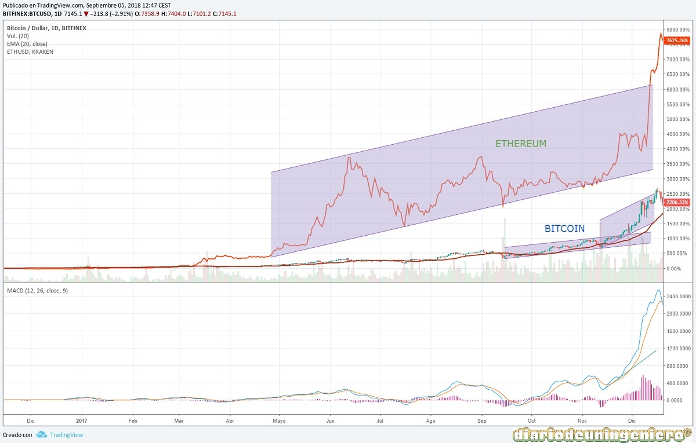

No ha habido períodos de la bolsa que hayan traído tantas incógnitas como este.
Por un lado tenemos la presidencia de Trump que tantos quebraderos de cabeza ha traído a la mayoría de los analistas políticos y económicos.
Por otro lado una frágil Europa con desafíos de tal índole como el Brexit o las elecciones en Francia.
En caso de haber recaído en Lepen hubiera desencadenado en una hecatombe difícil de imaginar.
Además las tensiones con Korea del Norte en los mares del Japón y las tensiones por el poder en la guerra de Siria, con Rusia, Estados Unidos y Turquía como protagonistas.
Todo el mundo esperaba que el año iba a terminar con un dolar fuerte llegando a igualar al euro y ocurriría todo lo contrario. Nada más comenzar el año y tomar posesión Trump del cargo pronunciaría un discurso cargado de simbolismo.
En el enfatizo la idea de cerrarse a su país y tener una política exterior mínima, priorizando en los problemas internos de su país. Cargo duramente contra el sector farmacéutico y contra Europa, diciendo que siempre USA tenía que ir detras de Europa.
Además empezó a hablar de un cambio en su política comercial con el resto de países, incluyendo la idea arancelaria y la idea de un dólar más débil para aumentar sus exportaciones.
Esto fue una auténtica bomba de relojería, en la que la caída del dolar pese a la subida de tipos y a la bonanza ecónomica estadounidense con un casi pleno empleo sería evidente.
Esta inestabilidad y incertidumbre en sus palabras, hizo enferfecer la fiebre minera, en la que la onza de oro se disparo a niveles máximos en 3 años.
A la vez que el oro subía y que el euro subía debido al declive del dolar los índices europeos se estancaban. Desde Enero hasta mediados de Febrero no hubo subida en los índices. Y comenzaba a sondear la sobra del Frexit.
Y es que en Francia había unas elecciones en las que se jugaba nada menos que la integridad de la Unión Europea. Con los auges de populismos en Inglaterra, Holanda y Austria un nuevo eje había surgido con Le Pen y la extrema derecha francesa.
En Febrero serían las elecciones francesas de primera vuelta pero algo sorprendió. El nuevo partido del independiente Macron con su partido On Marche, batió al Partido Socialista Francés y al partido de derechas de Fillon la UMP.
Y se batiría con Le Pen en las presidenciales. Este cambio aseguraba ya que Macron ganaría debido a la simpatía por las políticas liberales en Francia económicas, cercanas a la UMP y a su sonrisa a los ideales del socialismo francés en lo social.
Este efecto haría despegar a todas las bolsas europeas a niveles record no vistos desde 2015. Alcanzando el IBEX los 11000 puntos o los 12500 en el DAX alemán, niveles récord desde 2008.
Este nivel se alcanzó justo una semana antes de las elecciones francesas lo que hacía presagiar que los resultados electorales a favor de Macron estaban descontados.

A partir de ahí para el IBEX ya nada sería como antes no llegando a alcanzar este nivel en todo el año, cerrando en torno a los 10300 puntos que es lo que vaticine al cierre del año anterior.
En el verano de este año nada memorable ocurriría en el plano de indices, por el ya conocido relax veraniego. Sin embargo la volatilidad en la divisa y en las materias primas estaban aseguradas.
Y es que desde principios de Julio hasta comienzos del septiembre el oro variaría de unos 1200 puntos debido al despeje de una Francia fuera de la UE a los 1350 puntos, máximos desde 2008 debido a las dudas entre un ataque de Estados Unidos a la República Popular de Korea del Norte por su lanzamiento constante de misiles y sus pruebas atómicas.
Estos ataques volverían a reaparecer al año siguiente si bien la esperanza llego al anunciar que Korea del Norte accedería a reuniones acerca de su programa atómico al inicio de los juegos de invierno del 2018 en la vecina Corea del Sur.
 El año 2017 sera recordad sin duda por el récord de lanzamiento de misiles, en el cual se dispararon casi 25 misiles, perfeccionando la técnica con el paso del tiempo.
El año 2017 sera recordad sin duda por el récord de lanzamiento de misiles, en el cual se dispararon casi 25 misiles, perfeccionando la técnica con el paso del tiempo.
El lanzamiento del 29 de Julio marcaría un antes y un después debido al rango de alcance pudiendo ya llegar a la costa Oeste Américana. Además fue no menos singular el hecho de sobrevolar Japón pudiendo tener este un casus bellis para iniciar cualquier operación.
El 3 de Septiembre Corea realizaría una prueba nuclear, en la que además afirmo que había conseguido miniaturizar la bomba. La bomba de Corea con tecnología de hidrógenos tendría una potencia de destrucción de 70 kilotones, 4 veces por encima de las que USA lanzó contra Japón en la segunda guerra mundial. Además podría ser acoplada a un misil balístico como el lanzado el 29 de Julio. Corea del Norte afirmaba también poder producir ojivas de este modelo en cadena.
Con todo esto la reacción de los mercados no se hizo nada esperar, produciéndose bajadas generalizadas en los índices y resurgiendo una apreciación de los metales preciosos ante cualquier intervención de los Estados Unidos. Sin embargo poco después de este ensayo y ante la marcha del tiempo, este repunte del oro fue suavizándose hasta unos niveles algo normales para este año, los 1250 que volverían a escalar de nuevo ante la amenaza verbal del líder Norcoreano.
En el siguiente gráfico se puede ver como estos hechos desencadenaron un miedo en la economía mundial que no se había visto desde el Brexit. Siendo bastante paradójico que cuando la economía mundial esta en unos mejores niveles con Estados Unidos ya subiendo los tipos de interés constantemente el oro sufriera estas subidas.
A comienzos del año empezó una de las mayores turbulencias en los valores catalanes en toda la historia de la bolsa española. Esto fue debido al intento de las instituciones catalanas de celebrar un referendum de manera clandestina en la que solo votaría una parte de la sociedad catalana. Esto tensaría mucho el precio de las firmas y valores catalanes, debido al futuro castigo de sus clientes.
Las consecuencias tardarían en llegar pero según se iban lanzando mensajes por parte de ciertos actores pertenecientes al mundo independentista la capitalización de las empresas con sede en Cataluña empezarían a notar un serio retroceso.
Los más perjudicados en este caso han sido los bancos catalanes del IBEX35 como son el Sabadell y Caixabank pero debido a que vivimos en un mundo globalizado aunque algunos no quieran reconocerlo como son aquellos que intentan separarse del resto como si el resto no fuera con ellos pues todos los demás bancos españoles también cayeron y por ende otros valores del IBEX35 alejados de problemas de cataluña. Tanto esta la economía globalizada que el Eurostox también tuvo su caída pero si comparamos como estaba hace un año el DAX30 alemán veremos como se ha mantenido y el IBEX35 ha retrocedido seriamente como un 10% más, siendo paradójico que España presente unos datos de crecimiento mayores que los de Alemania.
En el siguiente gráfico se presenta la subida impecable de Caixabank hasta que empezarán a soplar los vientos independentistas y su correlación con el IBEX.
Llevaba Trump ya avisando desde primeros de año sobre su nueva política económica sobre blindar el autoconsumo Americano y proteger sus empresas y a nadie le extraño de las nuevas políticas arancelarias.
El primero en caer sería México al cual seguiría China. A México los aranceles les vendrían tras la ruptura del tratado de libre comercio, TLC, de Norteamérica firmado por Canadá, Estados Unidos y México.
El ambiente comenzaría a calentarse en verano y los índices a la mínima excusa corregirían. Entonces empezaría a tomar calado los miedos de los inversores a una guerra comercial y relegaría a una segunda posición al miedo de una guerra militar con Corea del Norte.
Al final tras una serie de acusaciones por ambos bandos la cosa no se llegaría a materializar hasta Noviembre de este año. Trump entonces ordenaría aranceles al alumínimo y a todos sus derivados. Donde realmente se notaría el impacto sería sobre el papel de aluminio. Sin duda sería el primer ataque comercial al que le seguirán más al año que viene.
Como broche final y evento más remarcable del año es el auge de las criptomonedas. El año 2016 dejaron una rentabilidad difícil de mejorar y fueron a un buen ritmo hasta el verano. Lo que nadie imaginaba es lo que estaba a punto de acontecer ya que la mayor parte esperaba una corrección severa, habiendo alcanzado el Bitcoin el nivel de los 3000 $ en apenas 4 meses desde los 1000$.
Este año será sin duda recordado por el récord de los niveles de las criptodivisas, encabezadas por el Bitcoin en las que se alcanzarían a finalizar el año los 20.000$ por BTC.
Muchas criptodivisas nacerían en 2017 y batirían récord de rentabilidades. Si el Bitcoin paso de los 300$ a los 1000$ en 2016 alcanzando una rentabilidad del 300%, 2017 no sería menos pasando de los 1000 a los 20000, acabando el año con una rentabilidad del 2000% .
Es decir, alguien que hubiese tenido la idea de invertir 6000$ en Bitcoins en a comienzos de 2016, obteniendo 20 bitcoins y que tuviera la descabezada idea de mantenerlos a lo largo de dos años hubiera llegado a almacenar la cifra de 400.000$. Suponiendo un aumento de... casi un 7000%.
Esta rentabilidad de un 300% era difícil de asumir para un inversor experimentado. Aunque ya se sabe que la mayoría de inversores están alejados de este capital especulativo, sobre todo si se opera a largo plazo. Los indicadores son difíciles de medir y siguen otros parámetros que los valores bursátiles.
Si 300% era difícilmente asumible seguiría subiendo al mismo ritmo, ya no a un ritmo lineal, sino a un ritmo logarítmico batiendo el RSI el nivel de 80 (gran sobrecompra) a 6 meses constantemente. En noviembre se encontraría ya rozando los 10000$ y terminaría el año llegando a los 20000$.
Y su hermana pequeña el Ethereum no se quedaría nada lejos, si en 2016 no valía mas de 10$ y a comienzos de 2017 valiese unos 40$ al finalizar el año alcanzaría los 1200$ por unidad, teniendo un ascenso incluso más meteórico que el Bitcoin este año, ¡de un 3000%!.

Usando este sitio web aceptas nuestros Terminos y condiciones. Por favor Aceptar esto antes de usar el sitio web.
© 2016 - All Rights Reserved - Diseñada por Sergio López Martínez
El sitio se mantiene gracias a la publicidad, por favor Desactiva Adblock para seguir navegando
He desactivado Adblock![[Valid RSS]](https://www.feedvalidator.org/images/valid-rss-rogers.png "Validate my RSS feed")